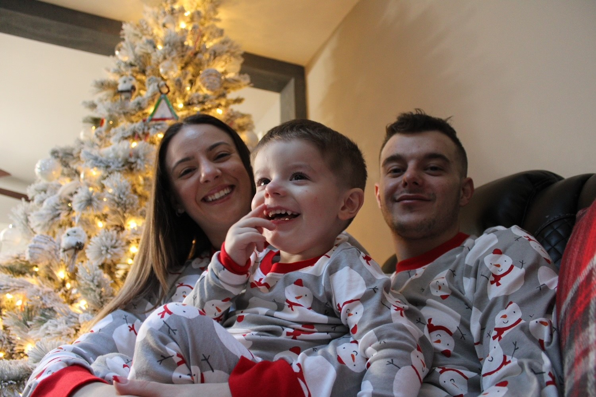
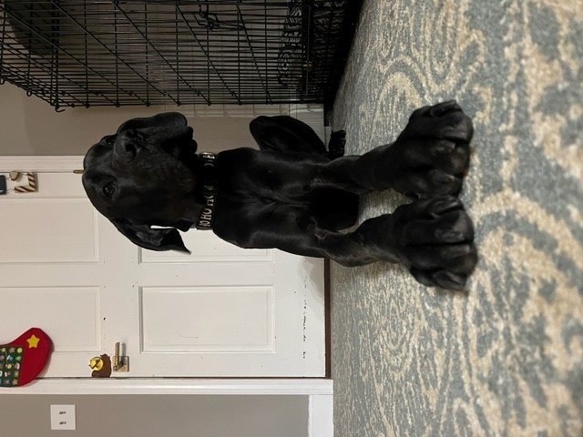

Joseph Martino
Biography
Joseph Martino is a 24 year old male that resides in Blackstone, Massachusetts. He was born in Providence, Rhode Island at Women & Infants Hospital on April 27, 1998. In 2016 Joseph graduated Johnston Senior Highschool and got his diploma. Joseph has had some very good jobs; Cashier, Garage Door Installer, Warehouse Operations & Delivery, Call Center Support Specialist, Senior Maintenance Technician. On January 21, 2019 Joseph and his fiancee welcomed their first son "Jovani" into the world. Now he currently attends NEIT to pursue an associates degree in Cyber Security & Network Engineering.
 Schooling
- Sarah Dyer Barnes Elementary
- Ferri Middle School
- Johnston Senior High School
- Southern New Hampshire University
- New England Technicial Institute
Hobbies
- Computers
- Spending time with family
- ATVs & Ditbikes
- Video Games
- Cars
One of my favorite websites | Science Daily |